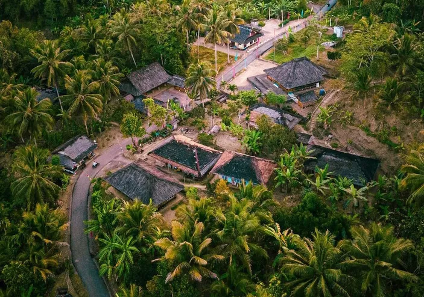

Kampung Adat Sunda: Kampung Kuta
By Siti Khanza Salsabila
Kampung Kuta mangrupikeun salah sahiji kampung adat Sunda anu perenahna di Desa Karangpaningal, Kecamatan Tambaksari, Kabupaten Ciamis, Jawa Barat. Kampung ieu masih ngajaga tradisi karuhunna jeung kuat dina adat-istiadat Sunda.
Sajarah Singget
Numutkeun carita turun-tumurun, Kampung Kuta geus aya ti jaman baheula, tur dianggap tempat anu sakral. Ngaran "Kuta" asalna tina kecap "kuta" anu hartina benteng atanapi tempat anu dikurilingan ku alam (leuweung jeung gawir). Baheulana, tempat ieu dipercaya minangka bagian tina karajaan Galuh, anu dipingpin ku raja Sunda buhun. Salah sahiji tokoh anu miboga peran penting dina ngajaga adat di Kampung Kuta nyaéta Eyang Ngabei Rangga Santika. Anjeunna dipercaya minangka karuhun anu ngamimitian ngajarkeun aturan adat anu diterapkeun di dinya nepi ka ayeuna.
Ciri Khas Kampung Kuta
Jaga Tradisi – Masarakatna tetep ngajaga adat Sunda, sapertos upacara adat, larangan ngawangun imah make témbok (keur ngajaga harmoni jeung alam), jeung sistem gotong royong anu kuat.
Larangan Adat – Di Kampung Kuta, aya sababaraha larangan, sapertos teu meunang ngagunakeun bahan wangunan modéren (siga semen jeung beusi), teu meunang nyieunan jamban di jero imah, jeung larangan tangtu dina sistem tatanén.
Lingkungan Alam Dijaga – Kampung ieu dikurilingan ku leuweung anu dianggap suci, sarta masarakatna ngajaga keseimbangan alam.
Sakabéh adat jeung kabiasaan di Kampung Kuta dumasar kana prinsip kearifan lokal anu ngajaga kasaimbangan antara manusa, alam, jeung spiritualitas. Ku kituna, tempat ieu jadi salah sahiji kampung adat di Tatar Sunda anu masih leuleus ngajaga budaya karuhun.
Struktur Organisasi Kampung Kuta
Di Kampung Adat Kuta, struktur organisasi tradisionalna dijieun pikeun ngajaga adat istiadat jeung harmonisasi masarakat. Sababaraha jabatan penting di kampung ieu di antarana:
1. Kuncen
Pamimpin adat anu miboga otoritas pikeun ngajaga jeung ngurus adat istiadat di kampung.
Kuncen ogé anu ngatur upacara adat, ngajaga leuweung larangan, sarta ngajarkeun nilai-nilai karuhun ka generasi salajengna.
2. Lebé
Jalma anu tanggung jawab kana kahirupan spiritual warga, khususna anu patali jeung agama Islam.
Biasana Lebé nu mingpin solat jumaahan, ngajarkeun agama, jeung ngabantu dina acara kawinan atawa jenazah.
3. Tetua Adat
Kumpulan kolot kampung anu boga pangalaman dina ngajaga adat jeung budaya.
Maranéhna sok janten panasehat pikeun masalah adat jeung sosial di kampung.
4. Kepala Dusun
Pimpinan administratif di kampung anu ngabantu ngajaga ketertiban jeung komunikasi antara warga jeung pamaréntah luar.
5. Rukun Warga (RW) jeung Rukun Tetangga (RT)
Ngurus masalah sosial jeung administrasi warga di tingkat paling leutik.
6. Juru Bicara Kampung
Jalma anu miboga tugas pikeun komunikasi antara kampung adat jeung pihak luar, sapertos pamaréntah, akademisi, atawa wisatawan.
Sakabéh struktur organisasi ieu diatur dumasar prinsip gotong royong, silih asah, silih asih, jeung silih asuh, supaya Kampung Kuta tetep ngajaga tradisi jeung harmoni masarakatna.
Sesebutan Jabatan Adat di Kampung Kuta
Kuncen – Ketua Adat, pangluhurna di kampung anu tanggung jawab ngajaga adat, ngalaksanakeun upacara tradisional, sarta ngajaga leuweung larangan.
Lebé – Menteri Agama Kampung, anu ngabantu dina hal ibadah jeung tradisi Islam di kampung.
Tetua Adat – Kumpulan sesepuh kampung anu jadi panasehat dina kaputusan adat.
Punduh – Jalma anu tugasna mirip lurah, tanggung jawab kana kahirupan sosial jeung administratif masarakat.
Juru Bicarana Kampung – Jalma anu jadi panganteur komunikasi antara warga adat jeung pihak luar, boh pamaréntah atawa wisatawan.
Ronda Adat – Jalma anu tanggung jawab kana kaamanan kampung jeung ngajaga tata tertib adat.
Ngaran Imah jeung Bangunan di Kampung Kuta
Di Kampung Adat Kuta, wangunan-wangunan tradisionalna dijieun maké gaya arsitéktur Sunda anu masih ngajaga kaaslian budaya. Sababaraha wangunan penting di kampung ieu diantarana:
Bumi Gede – Imah panggedéna di kampung, biasana dipaké ku sesepuh adat atawa ketua adat pikeun musyawarah jeung upacara adat.
Balé Sawala – Tempat pikeun rapat adat jeung musyawarah warga kampung.
Leuit – Lumbung tempat nyimpen paré hasil tatanén, supaya stok kadaharan tetep aya.
Langgar/Mushola – Tempat ibadah warga, sabab mayoritas penduduk Kampung Kuta nganut agama Islam.
Saung Lisung – Tempat pikeun numbuk paré sacara tradisional.
Leuweung Larangan – Sanajan lain wangunan, tempat ieu sakral pisan sabab dianggap bagian tina karuhun sarta henteu meunang dirusak atawa ditegor.
Sakabéh wangunan di Kampung Kuta dijieun tina kai, awi, jeung bahan alami séjén pikeun ngajaga harmoni jeung alam. Salian ti éta, masarakat boga aturan pikeun henteu ngagunakeun bahan modéren kawas semen jeung beusi dina wangunanana.
Jumlah Bangunan di Kampung Kuta
Di Kampung Adat Kuta, jumlah bangunan tradisionalna kurang leuwih 70 nepi ka 90 unit, anu dihuni ku sekitar 300 jiwa. Wangunan ieu diwangun tina kai, awi, jeung bahan alami pikeun ngajaga kasaimbangan jeung alam. Jumlah bangunan di Kampung Kuta bisa di bagi kana sababaraha kategori:
Imah Adat – Aya sakitar 70-80 imah, dijieun make kai jeung hateup daun kiray.
Balé Sawala – 1 wangunan, dipaké pikeun rapat adat jeung musyawarah warga.
Leuit (Lumbung Paré) – Aya sababaraha leuit pikeun nyimpen paré hasil tatanén.
Langgar/Mushola – Aya 1 mushola, dipaké pikeun ibadah warga Muslim.
Saung Lisung – Wangunan tradisional pikeun numbuk paré.
Salian ti éta, Kampung Kuta dikurilingan ku Leuweung Larangan, wewengkon anu dianggap sakral jeung dijaga ku adat, henteu meunang ditegor atawa dirusak.
Aturan Adat di Kampung Kuta
Teu meunang ngawangun imah maké témbok. Sadaya imah kudu dijieun tina bahan alami kawas kai, awi, jeung hateup daun kiray. Ngagunakeun semen, beusi, atawa témbok dianggap ngalanggar adat.
Teu meunang ngarusak Leuweung Larangan.Leuweung di sabudeureun kampung dianggap sakral, henteu meunang ditegor, ditebang, atawa dipaké pikeun kapentingan pribadi.
Teu meunang nyieun jamban di jero imah. Warga di Kampung Kuta henteu nyieun jamban di jero imah, sabab dianggap henteu merenah sacara adat jeung kabersihan.
Teu meunang maké listrik sacara lega. Walaupun ayeuna sababaraha imah geus maké listrik, panggunaanana masih diwatesan supaya henteu ngaruksak harmoni tradisi.
Upacara adat kudu tetep dilaksanakeun. Warga kudu ngalaksanakeun ritual adat kawas Sedekah Bumi, Ngalungsur Karuhun, jeung acara séjén pikeun ngajaga tradisi.
Kapamalian (Pantangan) di Kampung Kuta
Teu meunang nyebutkeun hal goréng di Leuweung Larangan. Warga yakin yén leuweung éta sakral sarta dihuni ku roh karuhun. Mun aya anu ngucapkeun hal goréng, dipercaya bakal aya musibah.
Teu meunang nyieun imah leuwih luhur tibatan Bumi Gede. Bumi Gede minangka tempat sesepuh adat, sahingga henteu meunang aya imah anu leuwih jangkung ti eta.
Teu meunang nyieun hajat di bulan Muharam (Suro).Bulan Muharam dianggap bulan anu henteu merenah pikeun hajatan kawinan atawa acara gedé, sabab dipercaya bakal mawa musibah.
Teu meunang nyokot batu atawa kai di Leuweung Larangan. Nyokot batu atawa kai di leuweung dianggap ngalanggar adat jeung bisa mawa sial ka nu ngalakukeun.
Teu meunang hudang di tengah peuting jeung nyapu di jero imah. Ieu kapamalian pikeun awéwé, sabab dipercaya bisa ngusir rejeki.
Upacara Adat Nu Aya di Kampung Kuta
Di Kampung Adat Kuta, aya sababaraha upacara adat anu masih dijaga tur dilaksanakeun ku masarakat salaku wujud syukur ka alam jeung karuhun. Ieu sababaraha upacara adat anu penting:
1. Upacara Sedekah Bumi
Mangrupa upacara pangpentingna di Kampung Kuta.
Dilaksanakeun pikeun masihan rasa syukur ka Gusti atas hasil tatanén.
Aya prosesi doa bersama, ngaruwat bumi, jeung hajatan adat.
2. Upacara Ngalungsur Karuhun
Upacara pikeun méméhkeun karuhun (leluhur) anu dipercaya ngajaga kampung.
Dilaksanakeun di tempat-tempat sakral, kalebet Leuweung Larangan.
Prosésna biasana ngagunakeun sesajen adat jeung doa tradisional.
3. Upacara Hajat Sasih
Upacara pikeun mohon berkah jeung kasalametan ka alam jeung roh karuhun.
Biasana dipirig ku seni tradisional jeung pagelaran ritual adat.
Dilaksanakeun unggal sataun dina bulan-bulan tangtu.
4. Upacara Mapag Sri
Upacara pikeun mapag musim panén sarta méré rasa syukur kana hasil paré.
Biasana aya prosesi ngarak paré ka leuit sarta ritual doa di lumbung paré.
5. Upacara Ngabungbang
Upacara pikeun meresihan diri jeung alam tina sagala hal goréng.
Biasana warga ngalarung sesajen ka alam salaku simbol pembersihan.
Sakabéh upacara ieu dilaksanakeun pikeun ngajaga harmoni antara manusa, alam, jeung roh karuhun. Sanajan mayoritas warga nganut agama Islam, aranjeunna tetep ngajaga adat Sunda minangka warisan budaya karuhun.
Agama jeung Kapercayaan di Kampung Kuta
1. Islam Sunda
Mayoritas warga Kampung Kuta muslim, tapi masih ngajaga unsur budaya Sunda dina kahirupan sapopoé.
Maranéhna ngalaksanakeun solat, puasa, jeung ibadah Islam séjénna, tapi ogé tetep ngalakukeun upacara adat.
Aya Lebé (pamingpin agama) anu ngabimbing warga dina urusan ibadah Islam.
2. Kapercayaan Karuhun (Animisme & Dinamisme Sunda)
Sababaraha warga masih percaya kana roh karuhun jeung kakuatan alam.
Leuweung Larangan dianggap tempat sakral anu dijaga ku roh-roh karuhun.
Masih aya kabiasaan ngalungsur karuhun jeung ngalarung sesajen pikeun ngajaga harmoni antara manusa jeung alam.
3. Sinkretisme Islam & Adat Sunda
Islam di Kampung Kuta dicampurkeun jeung nilai-nilai adat Sunda, hasilna masarakatna masih ngalaksanakeun ritual tradisional.
Misalna, sanajan maranéhna muslim, tapi teu meunang ngarusak leuweung larangan atawa ngalaksanakeun ritual Sedekah Bumi pikeun syukuran tatanén.
Jadi, sanajan mayoritas warga nganut Islam, tapi unsur adat Sunda masih kuat kénéh dina kahirupan sapopoé. Ieu ngabuktikeun yén masarakat Kampung Kuta sanggup ngajaga keseimbangan antara agama, budaya, jeung alam.
Fakta Unik Kampung Adat Kuta
Kampung Adat Kuta di Ciamis, Jawa Barat, miboga sababaraha keunikan anu ngajadikeun eta beda ti kampung-kampung adat lianna. Ieu sababaraha fakta unikna:
1. Leuweung Larangan Anu Sakral
Aya leuweung sakral anu disebut Leuweung Larangan, tempat ieu henteu meunang ditegor, ditebang, atawa dipaké pikeun kapentingan pribadi.
Leuweung ieu dipercaya tempat karuhun jeung roh nu ngajaga Kampung Kuta.
2. Aturan Wangunan Anu Unik
Di Kampung Kuta, imah henteu meunang dijieun tina témbok, semen, atawa beusi.
Sadaya imah kudu dijieun tina kai, awi, jeung daun kiray, supaya tetep harmonis jeung alam.
3. Warga Teu Meunang Nyieun Jamban di Jero Imah
Aya aturan adat anu nyebutkeun yén jamban teu meunang di jero imah.
Warga biasana ngagunakeun jamban khusus di luar imah pikeun ngajaga kabersihan lingkungan.
4. Kombinasi Islam jeung Adat Sunda
Sanajan mayoritas warga muslim, tapi maranéhna masih ngajaga kuat adat Sunda, kawas Sedekah Bumi, Ngalungsur Karuhun, jeung ritual tradisional séjén.
Ieu nuduhkeun yén masarakat Kampung Kuta ngajaga keseimbangan antara agama jeung budaya karuhun.
5. Teu Sadayana Warga Bisa Jadi Penduduk Kampung Kuta
Henteu sadaya jalma bisa cicing di Kampung Kuta.
Lamun aya jalma ti luar anu hayang netep di dinya, anjeunna kudu nurut kana aturan adat sarta meunang idin ti tetua adat.
6. Larangan Ngadamel Hajat di Bulan Suro (Muharam)
Warga teu meunang ngayakeun hajat kawinan atawa acara gedé di bulan Suro, sabab dipercaya éta bulan anu kurang merenah pikeun hajatan.
7. Struktur Sosial Anu Masih Kuat
Kampung Kuta masih ngajaga sistem sosial tradisional, dimana Kuncen (Ketua Adat) jeung Tetua Adat miboga pangaruh kuat dina kahirupan warga.
Masarakatna ogé masih ngalaksanakeun gotong royong dina sagala hal, ti mimiti tatanén nepi ka pangwangunan.
Kampung Adat Kuta jadi bukti yén tradisi Sunda masih bisa dijaga tur diwariskeun ka generasi salajengna, sanajan zaman geus modéren. Ieu kampung ngajarkeun pentingna harmoni antara manusa, alam, jeung karuhun.